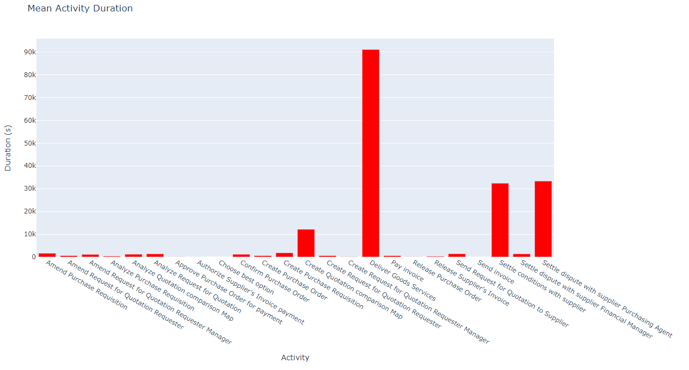

Activities Mean Duration¶
To get a plot (in html format) with the mean duration of each activity, the user must provide two parameteres in the request to /mean_durations endpoint:
- filename
the name of the event log
- folder
the folder of the event log which is the email of the user (login email)
A get request must be sent to the following address:
http://<server_ip>:5000/mean_durations?filename=PurchasingExample.xes&folder=<email_address>
where text with <> should be replaced with the corresponding information.
The response is:
image: http://<server_ip>:5000/static/mean_durations.html
and the mean_durations.html is an html graph as shown in the following picture:
